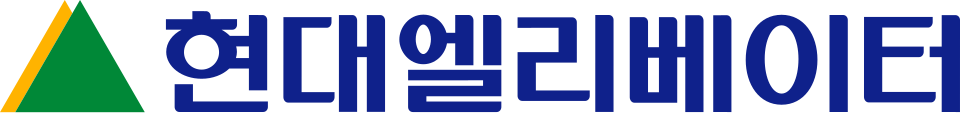

현대엘리베이터 Hyundai Elevator
현대엘리베이터(Hyundai Elevator)는 현대그룹 계열사로, 엘리베이터·에스컬레이터·무빙워크 등 승강기와 주차 설비를 설계·생산하고 유지 보수하는 회사이다.
최종 업데이트

현대엘리베이터는 어떤 브랜드인가
현대엘리베이터는 현대그룹 계열사로서 승강기와 주차 설비의 설계, 생산, 유지 보수를 수행한다. 엘리베이터뿐 아니라 에스컬레이터와 무빙워크를 다루며, 입체주차설비와 물류자동화 분야에도 진출했다.
대한민국 승강기 신규 설치 시장에서는 2007년 오티스 엘리베이터의 설치 대수를 앞선 뒤 18년째 시장점유율 1위이다. 범 현대가 경영권 분쟁 이후 현대그룹의 지주회사로 자리 잡았으며, 대북 7대 사업권을 지닌 현대아산 지분 약 70%를 보유한다.
이 지분 구조 때문에 주식 시장에서는 남북 경제협력 상황에 주가가 민감하게 반응하는 종목이다.
현대엘리베이터는 어떻게 시작되고 성장했나
현대엘리베이터의 브랜드 아이덴티티는 무엇인가
승강기 제조와 유지 보수를 중심으로 주차 설비와 물류자동화까지 사업을 넓히고, 현대그룹 지주회사 역할도 겸한다는 점이 구분점이다.
현대엘리베이터의 대표 제품과 서비스는 무엇인가
주력 사업은 엘리베이터, 에스컬레이터, 무빙워크와 같은 승강기 및 주차 설비의 설계, 생산, 설치와 유지 보수이다. 선박용·유압식·중고속·고속 승강기 기술을 도입했으며, 승강기 원격 감시·제어 시스템과 지능형 군관리 시스템도 개발했다.
1990년 입체주차설비 사업에 진출했고, 미국 ICIS 및 일본 무라타와의 소프트웨어 기술 제휴를 바탕으로 FA사업부를 신설해 물류자동화 사업과 자동창고 운영 체계를 구축했다. 무빙워크 분야에서는 기술계약을 거쳐 벨트형 무빙워크 생산을 개시했다.
현대엘리베이터는 지금 어떤 상태인가
현대엘리베이터는 범 현대가 경영권 분쟁 이후 현대그룹의 지주회사 역할을 한다. 현대아산 지분 약 70%를 보유하며, 대한민국 승강기 설치 시장에서는 2007년부터 이어진 18년째 시장점유율 1위이다.
현대아산이 대북 7대 사업권을 보유한 까닭에 주식 시장에서 남북 경제협력 상황에 주가가 민감하게 반응한다. 본사 소재지는 목행용탄동이다.
현대엘리베이터 로고는 어떻게 변해왔나
자주 묻는 질문
현대엘리베이터는 어느 나라 브랜드인가요?
현대엘리베이터는 한국의 에너지·산업재 브랜드입니다.
현대엘리베이터는 언제 설립되었나요?
현대엘리베이터는 1984년 설립되었습니다.
현대엘리베이터의 브랜드 아이덴티티는 무엇인가요?
승강기 제조와 유지 보수를 중심으로 주차 설비와 물류자동화까지 사업을 넓히고, 현대그룹 지주회사 역할도 겸한다는 점이 구분점이다.
현대엘리베이터의 대표 제품은 무엇인가요?
주력 사업은 엘리베이터, 에스컬레이터, 무빙워크와 같은 승강기 및 주차 설비의 설계, 생산, 설치와 유지 보수이다.
현대엘리베이터는 어느 기업이 소유하고 있나요?
현대엘리베이터는 범 현대가 경영권 분쟁 이후 현대그룹의 지주회사 역할을 한다.
현대엘리베이터의 본사는 어디에 있나요?
현대엘리베이터의 본사는 목행용탄동에 있습니다(위키데이터 기준).
현대엘리베이터의 공식 웹사이트는 어디인가요?
현대엘리베이터의 공식 웹사이트는 http://www.hyundaielevator.co.kr 입니다.
출처와 검증
현대엘리베이터 관련 참고: 공식 웹사이트 · 위키데이터 Q11286389 · 한국어 위키백과 · 영어 위키백과. 브랜드명은 한글과 원어를 함께 표기하되 데이터에 없는 표기는 만들지 않습니다. 기원 국가·설립연도는 검수된 정의문에서 확인된 값을 우선하고, 없을 때만 공식 웹사이트 URL이 일치하는 위키데이터 개체의 값을 씁니다. 위키데이터 값은 2026-09-20 기준입니다.